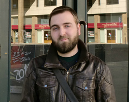

Introduction
My name is José Devezas and I am a researcher with a Master in Informatics and Computing Engineering, and a taste for learning new things. I love what I do, and I think it's a privilege to be a data scientist in today's society. It's true that being a scientist implies a certain endurance to failure, but like Theodore Roosevelt once said: “it is hard to fail, but it is worse never to have tried to succeed”. I believe there are advancements to be made and that new approaches and new ways of interpreting information will lead us there.
I have begun my research career in the Faculty of Engineering of the University of Porto, where I graduated and where I worked as a researcher for Labs SAPO/UP. I am now about to integrate the Breadcrumbs team as part of CRACS/INESC-Porto, in the Faculty of Science of the University of Porto. I dedicate most of my time to the study of community detection methodologies and the analysis of communities, but I also do work on data mining, network analysis, information retrieval and data visualization.